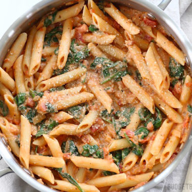

Spinach and Tomato Pasta

Ingredients
| 1 tablespoon olive oil |
1 cup chopped onion |
| 6 garlic cloves, finely chopped |
1 (14.5-ounce) can unsalted petite diced tomatoes, undrained |
| 1 1/2 cups unsalted chicken stock (such as Swanson) |
1/2 teaspoon dried oregano |
| 8 ounces whole-grain spaghetti or linguine (such as Barilla) |
1/2 teaspoon salt |
| 10 ounce fresh spinach |
1 ounce Parmesan cheese, grated (about 1/4 cup) |
1. Heat a Dutch oven or large saucepan over medium-high heat. Add oil; swirl to coat.
2. Add onion and garlic to pan; sauté 3 minutes or until onion starts to brown.
3. Add tomatoes, stock, oregano, and pasta, in that order. Bring to a boil.
4. Stir to submerge noodles in liquid.
5. Cover, reduce heat to medium-low, and cook 7 minutes or until pasta is almost done.
6. Uncover; stir in salt.
7. Add spinach in batches, stirring until spinach wilts. Remove from heat; let stand 5 minutes.
8. Sprinkle with cheese.
9. Riff: Use fresh grape tomatoes instead, and add fresh herbs.
10. Riff: Swap out spaghetti for any short pasta shape, such as elbow macaroni, rotini, or shells.
11. Riff: Try adding chopped skinless, boneless chicken thighs, ground beef, or ground turkey for a heartier dish